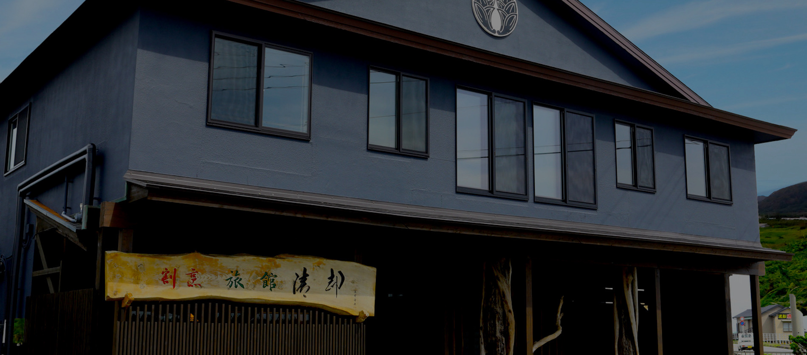
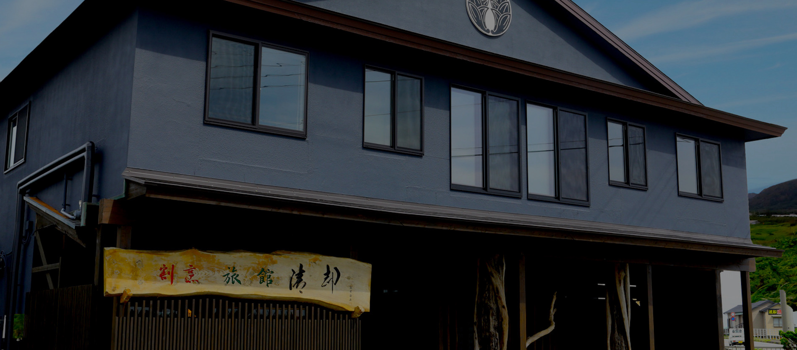

アクセスAccess
お車でお越しの場合


アクセスAccess
お車でお越しの場合
電車でお越しの場合高速バスでお越しの場合


ご送迎のご連絡は0470-30-5030まで
館山駅以外でも千倉駅や近隣施設へもお迎えに上がります。
送迎可能施設は電話にてお問い合わせください。
周辺施設のご案内
お車で約60分

鴨川シーワールド
かわいいイルカや迫力満点のシャチなど海の動物たちのショーが評判のシーワールド。見るだけでなくイルカにタッチしたりシャチにキスをもらったりと、大人も子供も楽しめる人気スポットです。
お車で約5分

野島崎灯台
「白鳥の灯台」とも呼ばれ、日本で2番目に古い灯台。房総最南端の海からの朝日と夕日が絶景のスポットで、国内有数の登れる灯台のひとつです。
お車で約15分

道の駅 ちくら・潮風大国
南房総ならではの物産と食事が楽しめる道の駅です。南房総レンタルカート「BOSOKART」も楽しめます。
お車で約12分

アロハガーデンたてやま
南国な雰囲気の植物園。動物ふれあい広場ではかわいい動物たちと触れ合えるフラダンスイベント等もあるので要チェックです。
お車で約25分

渚の駅たてやま・渚の博物館
館山夕日桟橋と隣接する海と道の駅おしゃれなお食事とお土産を目当てに賑わうスポット名誉駅長「さかなくん」のギャラリーもあります。
お車で約90分

マザー牧場
羊のショーや「こぶたのレース」などが人気バンジージャンプ等のアトラクションや手作り体験もオススメです。
お車で約10分

フローラルビレッジ名倉
花摘みや落花生など季節の収穫体験もできる自然体験スポット温暖な南房総のお花は大人気です。
お車で約25分

高家神社
日本唯一の料理の神様がまつられる神社。料理人はもちろん、彼の胃袋をつかみたい女性にも人気のスポットです。
お車で約5分

白浜ひものセンター
白浜の海産物を買うにはここがオススメ自家製干物はもちろん、クジラ製品やウツボの開きなど房総ならではのお土産が手に入ります。
お車で約20分

木村ピーナッツ
千葉といえば落花生、落花生専門店です。ピーナッツソフトクリームが大人気味噌ピーやピーナッツクリームもお土産にオススメ。
根本海水浴場へお車で約5分

海水浴場
房総にはきれいな海に囲まれています。当館近くの根本海岸、塩浦海岸に加え北条海岸、千倉海岸もオススメです。海に入らなくても貝殻を拾ったりと楽しめます。